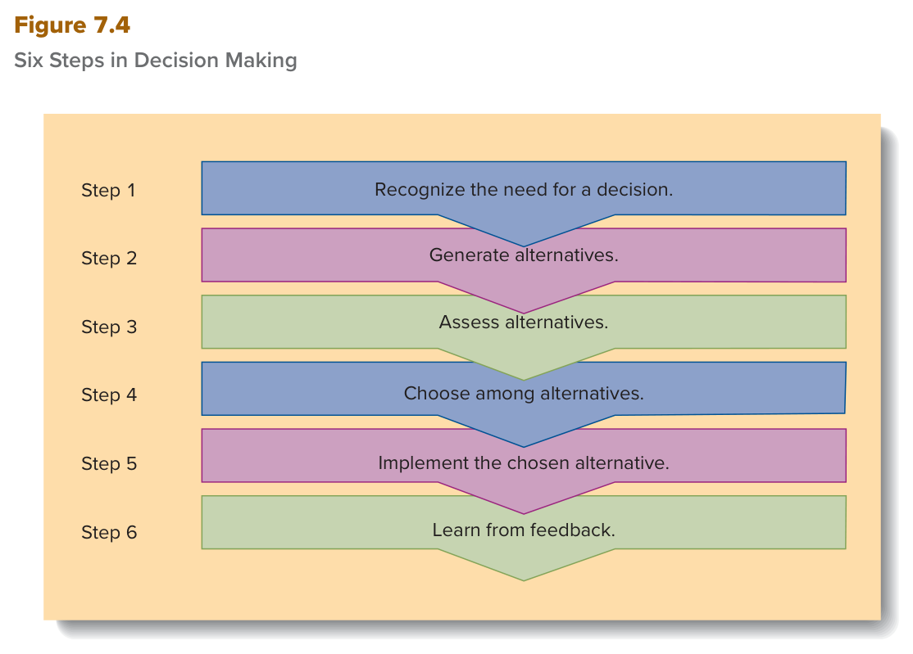
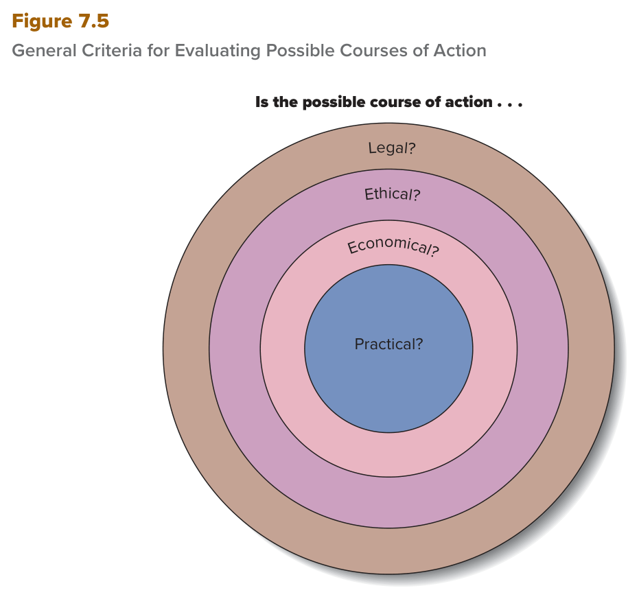
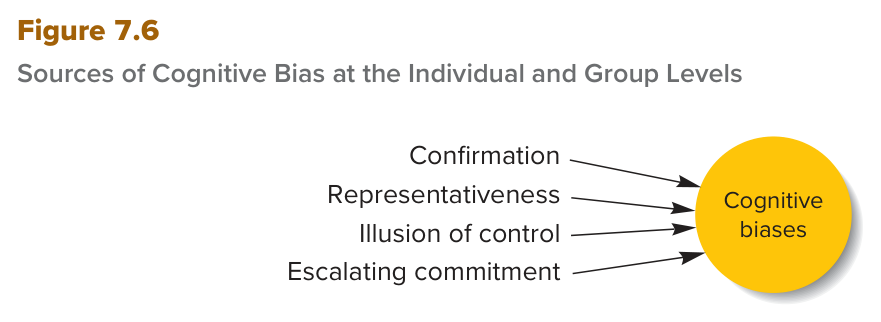

MGT 102 · Chapter 7 · Section 2 of 4:
Steps in Decision Making and Cognitive Biases
Objective LO7-2: Describe the six steps managers should take to make the best decisions, and explain how cognitive biases can lead managers to make poor decisions.
In the previous lesson you learned that important decisions are usually nonprogrammed, and that the manager has bounded rationality and incomplete information, so he satisfices. OK, so what does he actually do? The book builds on the work of March and Simon and gives you 6 steps in order (Figure 7.4), and inside the third step there are 4 criteria for judging the options (Figure 7.5). Then it answers a second question: why does a capable manager make a bad decision? Because his mind uses shortcuts (heuristics) that bring mistakes that repeat (systematic errors), and from them come 4 sources of bias (Figure 7.6). And last: how to find your own biases (personal decision audit).
Focus from now on five things that trip up students here: (1) the order of the six steps — especially generate → assess → choose, (2) the four criteria and their examples (McNealy and Challenger), (3) the difference between confirmation and representativeness, (4) the difference between illusion of control and escalating commitment, (5) the direction of the chain heuristics → systematic errors → cognitive biases. And take the English definitions word for word from the EXAM BOX.
The book says: the manager should consciously follow six steps to make a good decision. They are the same steps you see in Figure 7.4 below:
| # | The step | What happens in it (the key word) |
|---|---|---|
| 1 | Recognize the need for a decision إدراك الحاجة لقرار |
Stimuli from outside or inside make you feel you must decide |
| 2 | Generate alternatives توليد البدائل |
You come up with a set of feasible alternatives — and you get out of your old mind-set |
| 3 | Assess alternatives تقييم البدائل |
You evaluate the pros and cons of each alternative with the four criteria (Figure 7.5) |
| 4 | Choose among alternatives الاختيار من البدائل |
You rank the alternatives and make the decision |
| 5 | Implement the chosen alternative تنفيذ البديل المختار |
Many follow-up decisions + responsibility, resources, and accountability |
| 6 | Learn from feedback التعلّم من التغذية الراجعة |
Retrospective analysis + a formal procedure with 3 steps |
The book's important note: as you read the steps, remember that in real life decision makers may circle back and repeat some steps as conditions change: different needs may arise, new alternatives may emerge, or the implementation itself may uncover issues they overlooked. So the steps are not a strict straight line.

This is Figure 7.4 in the book (p. 193). It has six colored bands stacked on top of each other inside a light orange box, and on the left it says Step 1 to Step 6. How to read it: from top to bottom — Step 1 at the top (Recognize the need for a decision) and Step 6 at the bottom (Learn from feedback), and the lower edge of each band is pointed like an arrow that pushes you to the next one. The colors (blue, pink, green) repeat twice and have no meaning — do not link step 1 with step 4 just because they have the same color. Be careful: the figure draws the steps as a straight line, but the book says in real life you may go back and repeat steps. What they ask: “which step comes after this one?”, “which step is number 3?”, or a scenario that asks which step the manager is in now — and the most confusion is between generate (2), assess (3), and choose (4).
The book puts this box here to show you the flexible way of making a decision — how the company went back to earlier steps when conditions changed:
Linking the box to the steps (when to return = step 1, the 5/4/3 options = steps 2 and 3, the three days = step 4, April = step 5) is our own reading for practice — the book only says it is an example of the flexible approach.
Using the work of March and Simon as a basis, researchers have developed a step-by-step model of the decision-making process and the issues and problems that managers confront at each step.
Managers should consciously follow six steps to make a good decision (see Figure 7.4). We review these steps in the remainder of this section. As you read about the steps, keep in mind that, in practice, decision makers may circle back and repeat some steps as conditions change. Different needs may arise, new alternatives may emerge, and the implementation of a decision may uncover issues the decision makers overlooked.
When making decisions, managers should take these six steps: recognize the need for a decision, generate alternatives, assess alternatives, choose among alternatives, implement the chosen alternative, and learn from feedback.
The first step: realize that a decision must be made. McNealy recognized the need, and he also realized the decision had to be made quickly. Usually some stimuli spark this feeling, and they often become apparent because changes in the organization's environment bring new kinds of opportunities and threats.
| Source of the stimulus | What it means | Example |
|---|---|---|
| 1. Changes in the external environment | Changes that bring new opportunities and threats | Sun: the September 10 date was set when it seemed Motorola chips would be readily available; later the chip supply was in doubt and the software had bugs → danger of missing the date |
| 2. Actions of managers inside an organization | The organization has skills, competencies, and resources in its employees and departments (marketing, manufacturing, research and development). The manager who actively pursues opportunities to use these competencies creates the need for decisions himself | — |
The first step in the decision-making process is to recognize the need for a decision. Scott McNealy recognized this need, and he realized a decision had to be made quickly.
The stimuli that spark decision making are as likely to result from the actions of managers inside an organization as they are from changes in the external environment.
Managers thus can be proactive or reactive in recognizing the need to make a decision, but the important issue is that they must recognize this need and respond in a timely and appropriate way.
Having recognized the need to make a decision, a manager must generate a set of feasible alternative courses of action to take in response to the opportunity or threat. Management experts cite failure to properly generate and consider different alternatives as one reason that managers sometimes make bad decisions.
According to best-selling management author Peter Senge, we all are trapped within our personal mental models of the world—our ideas about what is important and how the world works.
After you generate the alternatives, you must evaluate the advantages and disadvantages of each one. And one reason for bad decisions is that managers fail to specify the criteria that are important for reaching a decision. In general, successful managers use four:
| # | The criterion | The question | What the book says |
|---|---|---|---|
| 1 | Legality القانونية |
Legal? | Makes sure the alternative will not violate any domestic or international laws or government regulations. |
| 2 | Ethicalness الأخلاقية |
Ethical? | Makes sure it is ethical and will not unnecessarily harm any stakeholder group. Many decisions help some people and harm others (the book sends you back to Chapter 4), so you must be clear about the potential effects of your decision. |
| 3 | Economic feasibility الجدوى الاقتصادية |
Economically possible? | Can the alternative be accomplished, given the organization's performance goals? Usually the manager does a cost–benefit analysis to see which alternative gives the best net financial payoff. |
| 4 | Practicality العملية / القابلية للتنفيذ |
Practical? | Do you have the capabilities and resources to implement it? And make sure it will not threaten the attainment of other organizational goals. An alternative may seem economically superior at first glance, but if it threatens other important projects, it is not practical after all. |
And often the manager must consider the four simultaneously.

This is Figure 7.5 in the book (p. 195). Above the figure there is an unfinished question: Is the possible course of action . . ., and under it four nested circles (a circle inside a circle), and each ring has a word that finishes the question — from outside to inside: Legal? (the brown outer ring) → Ethical? → Economical? → Practical? (the blue center). How to read it: read each ring as a full question: “Is the possible course of action legal? ethical? economical? practical?” — and the order from outside to inside is the same order as the criteria in the text. If you want to remember it, picture a filter: a good alternative passes through all the rings until it reaches the center. Notice that the words in the figure are short (Legal, Ethical, Economical, Practical) and the names of the criteria in the text are (legality, ethicalness, economic feasibility, practicality) — the same thing. And the book sends you back to this figure again in escalating commitment. What they ask: “which is NOT one of the criteria?”, “what is in the inner circle?” (Practical), or a scenario where you name the criterion (cost–benefit = economic, capabilities and resources = practical, stakeholders = ethical).
| # | What the two disasters had in common (4) |
|---|---|
| 1 | Safety questions were raised before the launch. |
| 2 | Safety concerns took second place to budgets, economic feasibility, and schedules. |
| 3 | Top decision makers seemed to ignore or downplay the inputs of people with technical expertise. |
| 4 | Speaking up was discouraged. |
Instead of making safety a top priority, they were too worried about staying on schedule and within budget — with catastrophic results.
The key to a good assessment of the alternatives is to define the opportunity or threat exactly and then specify the criteria that should influence the selection of alternatives for responding to the problem or opportunity. One reason for bad decisions is that managers often fail to specify the criteria that are important in reaching a decision. In general, successful managers use four criteria to evaluate the pros and cons of alternative courses of action (see Figure 7.5):
1. Legality: Managers must ensure that a possible course of action will not violate any domestic or international laws or government regulations.
2. Ethicalness: Managers must ensure that a possible course of action is ethical and will not unnecessarily harm any stakeholder group.
3. Economic feasibility: Managers must decide whether the alternatives are economically feasible—that is, whether they can be accomplished, given the organization's performance goals. Typically, managers perform a cost–benefit analysis of the various alternatives to determine which one will have the best net financial payoff.
4. Practicality: Managers must decide whether they have the capabilities and resources required to implement the alternative, and they must be sure the alternative will not threaten the attainment of other organizational goals.
Two main criteria were influencing McNealy's choice: the need to ship a machine that was as “complete” as possible (the practicality criterion) and the need to beat Apollo to market with a new workstation (the economic feasibility criterion). In fact, Sun Microsystems went ahead with the September 10 launch, which suggests that McNealy thought the need to beat Apollo to market was the more important criterion.
| # | How top managers make sure the decision is implemented (3) | The book's words |
|---|---|---|
| 1 | Assign middle managers the responsibility for the follow-up decisions needed to reach the goal | assign to middle managers the responsibility for making the follow-up decisions |
| 2 | Give them sufficient resources to achieve the goal | sufficient resources |
| 3 | Hold them accountable for their performance: if they succeed they are rewarded, and if they fail they face sanctions | hold … accountable · rewarded · sanctions |
| # | The step (the book's words) | In simple words |
|---|---|---|
| 1 | Compare what actually happened to what was expected to happen as a result of the decision. | Compare what really happened with what you expected |
| 2 | Explore why any expectations for the decision were not met. | Find out why some expectations did not happen |
| 3 | Derive guidelines that will help in future decision making. | Take out guidelines that help you with future decisions |
The manager who always tries to learn from his mistakes and successes keeps improving his decisions, and evaluating the outcomes of decisions brings a lot of learning and enormous benefits.
The book tells you directly: this is an example of a manager who learns from feedback.
Once the set of alternative solutions has been carefully evaluated, the next task is to rank the various alternatives (using the criteria discussed in the previous section) and make a decision.
Perhaps more serious than the existence of incomplete information is the often-documented tendency of managers to ignore critical information, even when it is available.
Although the need to make subsequent decisions to implement the chosen course of action may seem obvious, many managers make a decision and then fail to act on it. This is the same as not making a decision at all. To ensure that a decision is implemented, top managers must assign to middle managers the responsibility for making the follow-up decisions necessary to achieve the goal. They must give middle managers sufficient resources to achieve the goal, and they must hold the middle managers accountable for their performance.
The final step in the decision-making process is learning from feedback. Effective managers always conduct a retrospective analysis to see what they can learn from past successes or failures. Managers who do not evaluate the results of their decisions do not learn from experience; instead, they stagnate and are likely to make the same mistakes again and again. To avoid this problem, managers must establish a formal procedure with which they can learn from the results of past decisions. The procedure should include these steps:
1. Compare what actually happened to what was expected to happen as a result of the decision.
2. Explore why any expectations for the decision were not met.
3. Derive guidelines that will help in future decision making.
In the 1970s, psychologists Daniel Kahneman and Amos Tversky (the book says the late Amos Tversky, which means Tversky has died) said: all decision makers have bounded rationality, so they tend to use heuristics.
| Term | The book's definition (memorize it word for word) | What it means |
|---|---|---|
| Heuristics القواعد الاختصارية |
Rules based on an individual's experience that simplify the process of decision making. | rules from a person's experience that make deciding simpler — like “rules of thumb”. |
| Systematic errors الأخطاء المنهجية |
Errors that people make over and over and that result in poor decision making. | mistakes people repeat again and again that lead to bad decisions. |
| Cognitive biases التحيّزات الذهنية |
(no margin definition — the sentence from the text:) Because of cognitive biases, which are caused by systematic errors, otherwise capable managers may end up making bad decisions. | biases caused by systematic errors; because of them even a capable manager can make a bad decision. |

This is Figure 7.6 in the book (p. 198). On the right there is a yellow circle with the words Cognitive biases, and on the left four labels one above the other, each with an arrow going into the circle — from top to bottom: Confirmation, then Representativeness, then Illusion of control, then Escalating commitment. How to read it: the arrows go into the circle — so the four are sources that feed into bias (sources), not types that come out of it. And the title matters: at the Individual and Group Levels = the biases affect the individual and the group together. What they ask: “which is NOT a source of cognitive bias in Figure 7.6?” — and the usual distractors are satisficing, groupthink, bounded rationality, and heuristics, and none of them is one of the four.
| # | The source | The book's definition (word for word) | What it means + the book's example |
|---|---|---|---|
| 1 | Confirmation bias تحيّز التأكيد |
A source of cognitive bias that results from the tendency to base decisions on one's existing beliefs even if evidence shows that those beliefs are wrong. | You base your decision on your existing beliefs even if the evidence says they are wrong. Key word: existing beliefs. |
| 2 | Representativeness bias تحيّز التمثيلية |
A source of cognitive bias that results from the tendency to generalize inappropriately from a small sample or from a single vivid event or episode. | You generalize wrongly from a small sample or one vivid event. Example: the bookstore manager and Book Day. |
| 3 | Illusion of control وهم السيطرة |
A source of cognitive bias that results from the tendency to overestimate one's own ability to control activities and events. | You overestimate your ability to control activities and events. Top managers most of all; 70–90% of mergers fail. |
| 4 | Escalating commitment الالتزام المتصاعد |
A source of cognitive bias that results from the tendency to commit additional resources to a project even if evidence shows that the project is failing. | You put additional resources into a project even if the evidence says it is failing. Example: Mark Gracin and landscape design. |
1. Confirmation bias: a decision maker with strong existing beliefs about the relationship between two variables decides based on them even when he is shown evidence that his first beliefs may be wrong. On top of that, he tends to look for and use information that agrees with his beliefs and ignore information that contradicts them. Research says this bias is particularly strong when information is presented sequentially (one piece after another) and the person is asked to revisit his decision in light of new information. (The book gives no example story here.)
2. Representativeness bias — the Book Day story: a bookstore manager agreed with a local independent school on a “Book Day”: students and parents buy books at the store as a fund-raiser, and the store gives the school a small portion of the sales. After a lot of planning, the day brought lackluster sales and publicity. When other public and independent schools came with the same idea, he declined based on his first experience → he lost chances for sales and word-of-mouth advertising. The irony: the reason for the first failure was a scheduling snafu at the school — an important lacrosse game on the same day as Book Day!
3. Illusion of control: top managers seem particularly prone to it: after working their way to the top of the organization, they tend to have an exaggerated sense of their own worth and are overconfident about their ability to succeed and control events. So they overestimate the odds of a good outcome and make inappropriate decisions. The number: according to most studies, 70–90% of mergers and acquisitions fail — and yet, time and time again, top managers overestimate their ability to combine companies with vastly different cultures.
4. Escalating commitment — the Mark Gracin story: after a manager has put significant resources into a course of action, he puts in more even if he gets feedback that the project is failing. The reason: feelings of personal responsibility for the project bias his analysis. So he increases his investment of time and money and ignores evidence that the course of action is illegal, unethical, uneconomical, or impractical (the same criteria as Figure 7.5). The more appropriate decision is often: cut their losses and run = accept the loss and get out.
In the 1970s, psychologists Daniel Kahneman and the late Amos Tversky suggested that because all decision makers are subject to bounded rationality, they tend to use heuristics, which are rules based on an individual's experience that simplify the process of making decisions. Kahneman and Tversky argued that these rules are often useful because they help decision makers make sense of complex, uncertain, and ambiguous information.
Systematic errors are errors that people make over and over and that result in poor decision making. Because of cognitive biases, which are caused by systematic errors, otherwise capable managers may end up making bad decisions. Four sources of bias that can adversely affect the way managers make decisions are confirmation, representativeness, the illusion of control, and escalating commitment (see Figure 7.6).
confirmation bias A source of cognitive bias that results from the tendency to base decisions on one's existing beliefs even if evidence shows that those beliefs are wrong.
representativeness bias A source of cognitive bias that results from the tendency to generalize inappropriately from a small sample or from a single vivid event or episode.
illusion of control A source of cognitive bias that results from the tendency to overestimate one's own ability to control activities and events.
escalating commitment A source of cognitive bias that results from the tendency to commit additional resources to a project even if evidence shows that the project is failing.
Research suggests that confirmation bias is particularly strong when information is presented sequentially and the person is asked to revisit their decision in light of new information.
Other errors in decision making result from the illusion of control, which is the tendency of decision makers to overestimate their ability to control activities and events. Top managers seem particularly prone to this bias. According to most studies, 70–90% of mergers and acquisitions fail, yet time and time again, top managers overestimate their abilities to combine companies with vastly different cultures in a successful merger.
Feelings of personal responsibility for a project apparently bias the analysis of decision makers and lead to this escalating commitment. Often the more appropriate decision would be to cut their losses and run.
| # | The way | The details |
|---|---|---|
| 1 | Review two recent decisions review two decisions |
One that turned out well and one that turned out poorly. Problem-solving experts advise you to start by deciding how much time to spend on each step of decision making (for example, gathering information about the pros and cons of the alternatives, or ranking the alternatives), to make sure each step gets enough time. |
| 2 | List your criteria and evaluate them list the criteria |
Write down the criteria you usually use to judge alternatives — the heuristics you use, your personal biases, and so on — then evaluate how suitable they are with a critical eye (critically evaluate). |
| 3 | Work with other managers working with other managers |
Most managers have difficulty identifying their own biases, so it is better to scrutinize your assumptions with others so they can expose the weaknesses in your style. → this is where group decision making becomes important (lesson 3). |
How can managers avoid the negative effects of cognitive biases and improve their decision-making and problem-solving abilities? Managers must become aware of biases and their effects, and they must identify their own personal style of making decisions. One useful way for managers to analyze their decision-making style is to review two decisions that they made recently—one decision that turned out well and one that turned out poorly.
Another recommended technique for examining decision-making style is for managers to list the criteria they typically use to assess and evaluate alternatives—the heuristics they typically employ, their personal biases, and so on—and then critically evaluate the appropriateness of these different factors.
Many managers are likely to have difficulty identifying their own biases, so it is often advisable for managers to scrutinize their own assumptions by working with other managers to help expose weaknesses in their decision-making style.
Most of the time, managers are fairly good decision makers. On occasion, however, problems can result because human judgment can be adversely affected by the operation of cognitive biases that result in poor decisions. Cognitive biases are caused by systematic errors in the way decision makers process information and make decisions. Sources of these errors include confirmation bias, representativeness bias, the illusion of control, and escalating commitment. Managers should undertake a personal decision audit to become aware of their biases and thus improve their decision making.
The questions are in English because the exam is in English. Answer first, then open the solution. If you miss question 1, go back to the six-steps table in the first concept; if you miss question 3 or 4, go back to the four-sources table in the fifth concept.
B. Evaluating the pros and cons with the four criteria = step 3, Assess alternatives, and the step right after it in Figure 7.4 is step 4, Choose among alternatives (rank the alternatives and decide). The trap in A: generate is step 2 — it comes before assessing, not after, and he already listed four suppliers. C: implementing is step 5 — you do not implement before you choose. And D: that is the first step, and it finished long ago.
D. The book itself writes them in brackets: future funding = economic feasibility, and the astronauts' safety = ethicalness — and the managers deemed the economic one more important and launched despite the safety questions. The trap in B: this is McNealy's pair (a complete machine = practicality, beating Apollo = economic feasibility) — do not mix the two stories. A and C both have legality, and the story has no broken law.
B. Generalizing from one vivid case (a single vivid event or episode) = representativeness bias — exactly the story of the bookstore manager and Book Day (a lacrosse game on the same day). The trap in A: confirmation = a strong belief you already had, and you ignore the evidence against it; here the judgment comes from one experience. C: he is not overestimating his ability to control events. And D is the opposite of the story: he stopped; he did not pour in more resources.
A. Escalating commitment = commit additional resources to a project even if evidence shows that the project is failing, and its cause according to the book is feelings of personal responsibility — the same as the Mark Gracin story, and the more appropriate decision is cut their losses and run. The trap in B: illusion of control = overestimating your ability to control events (top managers, 70–90% of mergers fail), but the key words here are more resources + a failing project. C: satisficing is from the administrative model in lesson 1 (choosing an acceptable alternative), not a bias. And D: confirmation is about existing beliefs and the information you look for — the deciding feature here is pouring in resources.
C. Assigning middle managers the follow-up decisions belongs to step 5, Implement the chosen alternative (together with sufficient resources and accountability), not to the learning procedure. The step-6 procedure has three steps in order: compare (A) → explore why (B) → derive guidelines (D). The question uses NOT, so do not rush and pick the first true sentence you see.
| Term | What it means | Watch out for |
|---|---|---|
| Six steps in decision making | The step-by-step model managers should consciously follow | Recognize → Generate → Assess → Choose → Implement → Learn; you may circle back and repeat steps |
| Recognize the need for a decision | Step 1: noticing that a decision must be made | the stimulus comes from the external environment or from managers' actions inside |
| Stimuli | Things that start the feeling that you must decide | two sources, equally likely |
| Proactive / Reactive | Acting before something happens / acting after it | both are possible; what matters is timely and appropriate |
| Generate alternatives | Step 2: coming up with possible courses of action | failure to generate and consider alternatives = a reason for bad decisions |
| Feasible alternative courses of action | Options that can really be carried out | must be possible, in response to an opportunity or threat |
| Managerial mind-set | Seeing the world from a single perspective | blocks creative alternatives |
| Mental models | Our ideas about what is important and how the world works | Peter Senge: we are all trapped within them |
| Assess alternatives | Step 3: evaluating the pros and cons of each alternative | define the opportunity or threat exactly, then specify the criteria |
| Criteria | The standards you use to judge alternatives | failing to specify them = a reason for bad decisions; there are four |
| Legality | Does not break domestic or international laws or government regulations | both domestic and international |
| Ethicalness | Is ethical and does not harm any stakeholder group without need | unnecessarily; in Challenger = the astronauts' safety |
| Economic feasibility | Can be accomplished, given the organization's performance goals | cost–benefit analysis; beating Apollo and NASA's funding |
| Cost–benefit analysis | Comparing costs and benefits to find the best net financial payoff | belongs to the economic criterion, not practicality |
| Practicality | Having the capabilities and resources, without threatening other goals | McNealy's “complete” machine |
| Choose among alternatives | Step 4: ranking the alternatives and deciding | rank; information stays incomplete, and ignoring available information is worse |
| Implement the chosen alternative | Step 5: putting the decision into action | a decision with no action = the same as not making a decision at all |
| Accountable / Sanctions | Answerable for your results / punishments for failing | the third implementation condition: success = reward, failure = sanctions |
| Learn from feedback | Step 6: learning from the results of past decisions | the last step; a formal procedure of 3 steps: compare → explore why → derive guidelines |
| Retrospective analysis | Looking back at past successes and failures to learn from them | effective managers do it always; without it they stagnate |
| Redlining | Refusing to loan money or give insurance to people in areas seen as a poor financial risk | the SoLa box; refusing to loan or insure |
| Heuristics | Rules based on experience that simplify decision making | from experience; often useful; Kahneman & Tversky (the 1970s) |
| Rules of thumb | Another everyday name for heuristics | the class booklet uses it in its definition of the personal decision audit |
| Systematic errors | Errors people make over and over that lead to poor decisions | they are the cause of biases, not the result |
| Cognitive biases | Biases caused by systematic errors that lead to bad decisions | caused by systematic errors; 4 sources; they affect individuals and groups |
| Confirmation bias | Basing decisions on existing beliefs even when evidence shows they are wrong | an existing belief + ignoring the opposite evidence; stronger when information comes sequentially |
| Representativeness bias | Generalizing wrongly from a small sample or one vivid event | generalizing from one case — Book Day |
| Illusion of control | Overestimating your ability to control activities and events | control; top managers; 70–90% of mergers fail |
| Escalating commitment | Putting more resources into a project that is failing | additional resources into a failing project; personal responsibility; Gracin; cut their losses and run |
| Personal decision audit | Reviewing your own decisions to become aware of your biases | the summary's term; 3 ways: two decisions (good + bad) · list your criteria · work with others |
| Figure 7.4 — Six Steps in Decision Making | The six steps as six bands from top to bottom | Step 1 at the top and Step 6 at the bottom; the colors have no meaning |
| Figure 7.5 — General Criteria for Evaluating Possible Courses of Action | The four criteria as four nested circles | Legal? outside → Practical? in the center |
| Figure 7.6 — Sources of Cognitive Bias at the Individual and Group Levels | The four sources with arrows into one circle | 4 arrows go into the Cognitive biases circle |
These are the general English words on this page, not the management terms. Learn them and the textbook gets much easier to read.
| Word | Part of speech | العربية | Example sentence from this lesson |
|---|---|---|---|
| abandon | verb | يترك / يتخلّى عنيعني تخلّي الشي وتمشي عنه وما ترجع له | Generating creative alternatives to solve problems may require that we abandon our existing mind-sets and develop new ones. |
| apparent | adjective | واضح / ظاهريعني يبان قدّامك وتلاحظه بسهولة | These stimuli often become apparent because changes in the organizational environment result in new kinds of opportunities and threats. |
| catastrophic | adjective | كارثييعني نتيجته مصيبة كبيرة وخراب | Decision makers seemed overly concerned with keeping on schedule and within budget—with catastrophic results. |
| consciously | adverb | بوعي / عن قصديعني وأنت منتبه وعارف وش تسوي، مو بالصدفة | Managers should consciously follow six steps to make a good decision. |
| demise | noun | نهاية / زواليعني النهاية والموت أو انهيار الشي | Some of the same decision-making problems led to the demise of the Columbia space shuttle 17 years later. |
| derive | verb | يستخرج / يستنتجيعني تطلّع فكرة أو قاعدة من شي موجود قدّامك | Derive guidelines that will help in future decision making. |
| downplay | verb | يقلّل من شأنيعني تخلّي الشي يبان أصغر وأقل أهمية من حقيقته | Top decision makers seemed to ignore or downplay the inputs of those with relevant technical expertise. |
| enormous | adjective | ضخم / هائليعني كبير مرة | A significant amount of learning can take place when the outcomes of decisions are evaluated, and this assessment can produce enormous benefits. |
| exaggerated | adjective | مبالغ فيهيعني أكبر من حجمه الحقيقي بكثير | Having worked their way to the top of an organization, they tend to have an exaggerated sense of their own worth. |
| feasible | adjective | ممكن / قابل للتنفيذيعني تقدر تسويه فعلاً، مو بس فكرة على الورق | A manager must generate a set of feasible alternative courses of action to take in response to the opportunity or threat. |
| generalize | verb | يعمّميعني تاخذ حكم من حالة وحدة وتطبّقه على كل الحالات | Many decision makers inappropriately generalize from a small sample or even from a single vivid case or episode. |
| lackluster | adjective | باهت / ضعيفيعني ما فيه حماس ولا نتيجة تذكر | After quite a bit of planning, the Book Day generated lackluster sales and publicity for the store. |
| offset | verb | يعوّض / يغطّييعني تجيب شي يسدّ مكان الخسارة أو التكلفة | These efforts also did not generate sufficient interest in his landscape design services to offset their costs. |
| overestimate | verb | يبالغ في التقديريعني تحسب الشي أكبر أو أقوى من حقيقته | The illusion of control causes managers to overestimate the odds of a favorable outcome. |
| prone | adjective | معرّض / عنده قابليةيعني سهل يصير له هالشي أكثر من غيره | Top managers seem particularly prone to this bias. |
| reluctantly | adverb | على مضض / غصبيعني تسويه وأنت مو مرتاح ولا تبيه | Gracin reluctantly decided to abandon his landscape design services only when he realized he could no longer afford their mounting costs. |
| scrutinize | verb | يفحص بدقّةيعني تدقّق في الشي نقطة نقطة | It is often advisable for managers to scrutinize their own assumptions by working with other managers. |
| simultaneously | adverb | في نفس الوقتيعني كلها مع بعض في لحظة وحدة، مو وحدة ورا وحدة | Often a manager must consider these four criteria simultaneously. |
| snafu | noun | لخبطة / غلطة تنظيميةيعني خربطة في الترتيب تخرّب الخطة | The manager's initial bad experience was the result of a scheduling snafu at the school. |
| spark | verb | يشعل / يحفّززي الشرارة اللي تولّع النار، يعني تبدأ الشي | The stimuli that spark decision making are as likely to result from the actions of managers inside an organization as they are from changes in the external environment. |
| stagnate | verb | يركد / يجمديعني توقف مكانك وما تتطوّر زي الماي الراكد | Managers who do not evaluate the results of their decisions do not learn from experience; instead, they stagnate. |
| subsequent | adjective | لاحق / تالييعني يجي بعده | Once a decision has been made and an alternative has been selected, it must be implemented, and many subsequent and related decisions must be made. |
| undertake | verb | يقوم بـ / يتولّىيعني تبدأ شغلة وتلتزم تسويها | Managers should undertake a personal decision audit to become aware of their biases. |
| unnecessarily | adverb | بدون داعييعني بدون سبب يستاهل | Managers must ensure that a possible course of action is ethical and will not unnecessarily harm any stakeholder group. |
| violate | verb | يخالف / ينتهكيعني تكسر قانون أو قاعدة | Managers must ensure that a possible course of action will not violate any domestic or international laws or government regulations. |
| vivid | adjective | حيّ / واضح ومؤثّريعني شي محفور في بالك بقوة كأنك تشوفه | Many decision makers inappropriately generalize from a small sample or even from a single vivid case or episode. |
Built from the text of the textbook Contemporary Management, 12e (Jones & George, McGraw Hill) —
Chapter 7: Decision Making, Learning, Creativity, and Entrepreneurship, sections Steps in the Decision-Making
Process and Cognitive Biases and Decision Making (with Be Aware of Your Biases), objective LO7-2
(pages 192–199), with the book's Summary and Review.
Summarized only: the Management Insight box (Making “Back to
Work” Work at Molson Coors, pages 193–194) and the Focus on DEI&B box (SoLa Impact Pursues More than
Profits, page 197) are given in their main points, and linking Molson to the steps is our own practice. The English
definition of personal decision audit comes from the class booklet, not from the book. The classical and administrative
models are in lesson 1, and group decision making and groupthink are in lesson 3.